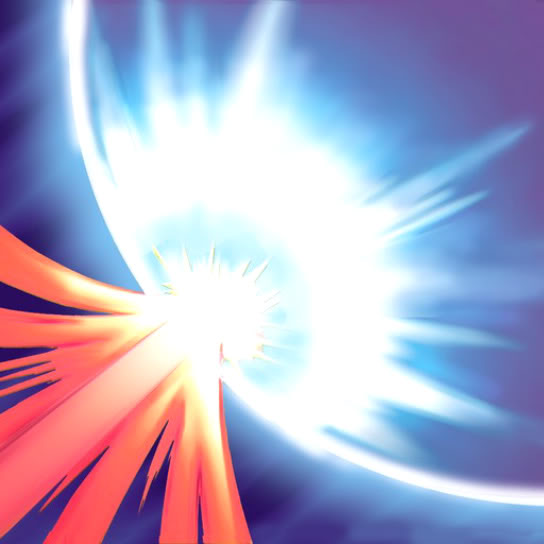

Mirror Force

Trap Card
Deck Cost: 99
Effect: Disposable trap that triggers when an enemy initiates an attack against your Leader or other cards on the field. Destroys every one of your opponent's attack-positioned cards on the field.
EFFECT NOT IMPLEMENTED!